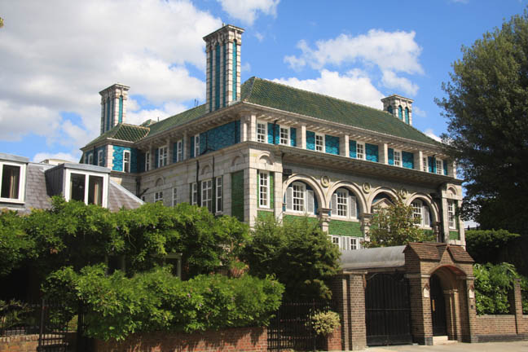
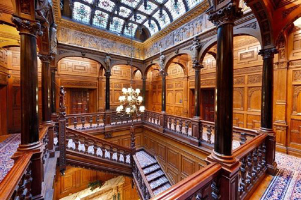
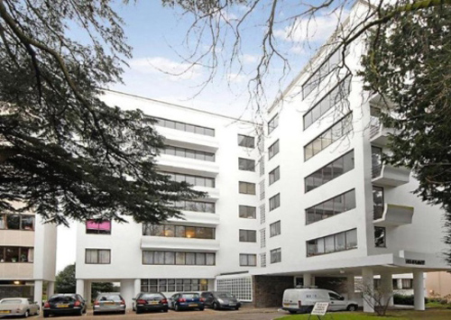
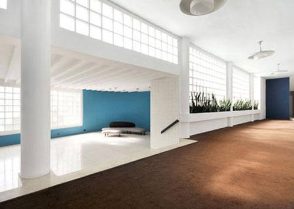
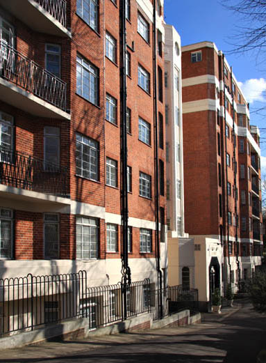
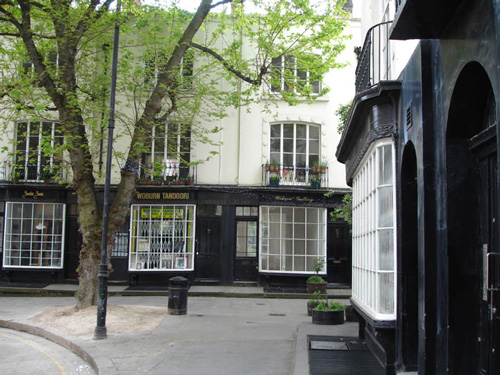
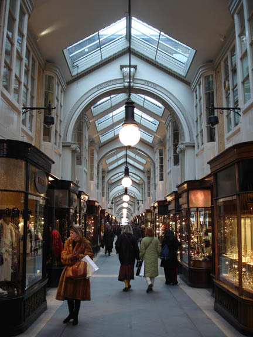

The Peacock House, Addison Road, London W14 used as 'Lord Edgware's house'. Built in 1905 by Halsey Ricardo for department store owner Sir Ernest Debenham. The house became known as 'Debenham House' after Sir Ernest's death. (Also used in 'Cards On The Table').

The interior was filmed at Two Temple Place, London WC2 (previously known as 'Astor House' as it was built for the first Viscount Astor, William Waldorf Astor).

Highpoint 1 - used as 'Jane Wilkinson's flat' was the first of two apartment blocks erected in the 1930s at Highgate, one of the highest points in London. The architecture was by the Russian-born architect Berthold Lubetkin, structural design by the Danish engineer Ove Arup and construction by Kier. It was built in 1935 for the entrepreneur Sigmund Gestetner, but was never used for its intended purpose of housing Gestetner company staff. One of the best examples of early International style architecture in London. (Also used in 'The Affair at the Victory Ball' and 'The Million Dollar Bond Robbery').

Highpoint 1 (interior).

Addisland Court, London W14 used as the location for 'Carlotta Adams' Flat'. (Also used in 'The Adventure of the Italian Nobleman').

Woburn Place, London WC1 used as 'Penny Driver's hat shop'. (Also used in 'The Clocks').

Burlington Arcade where Miss Lemon enquires about the engraved box. (Also used in 'The Veiled Lady' and 'Five Little Pigs').

Shoreham Airport. (Also appears in 'The Adventure of the Western Star' and 'Death in the Clouds').